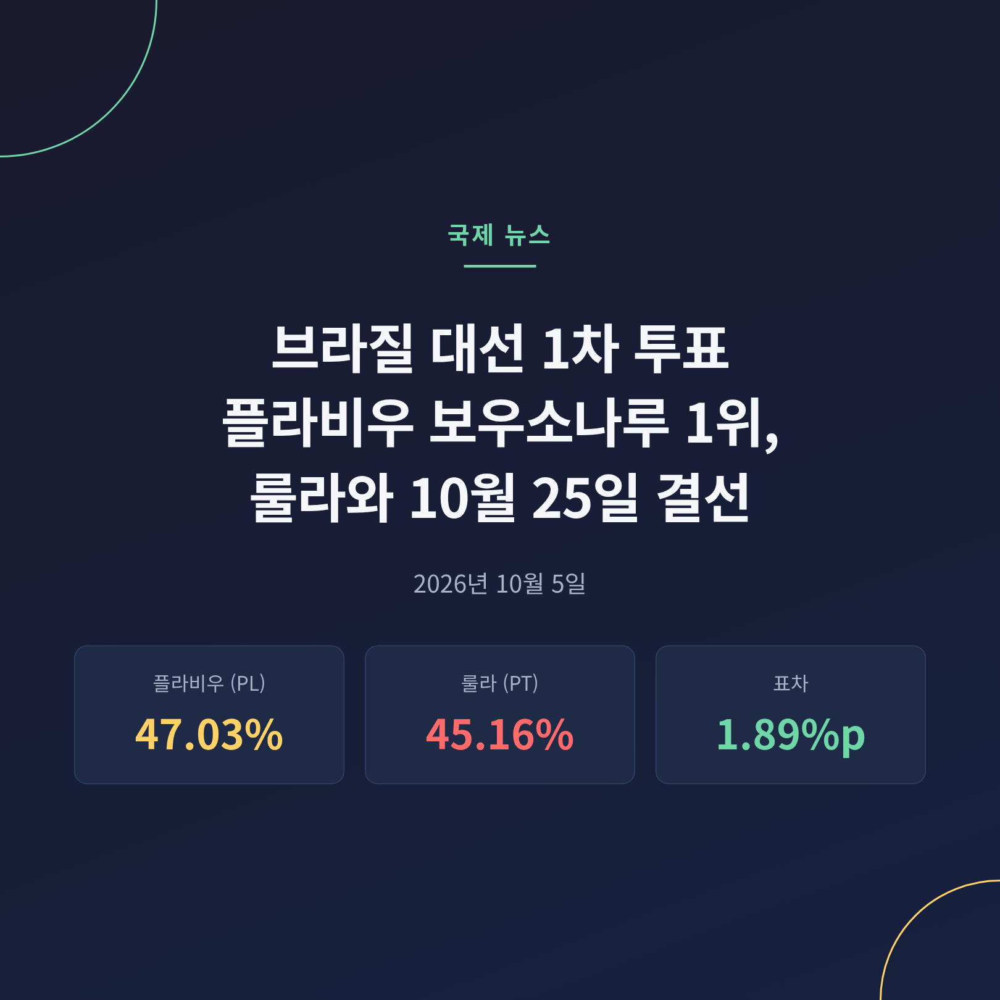
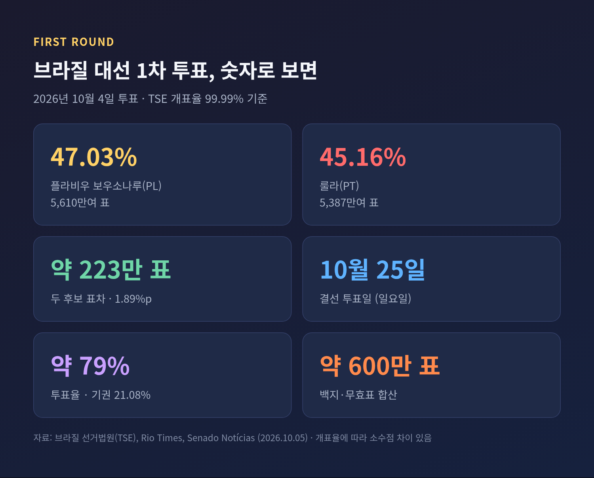
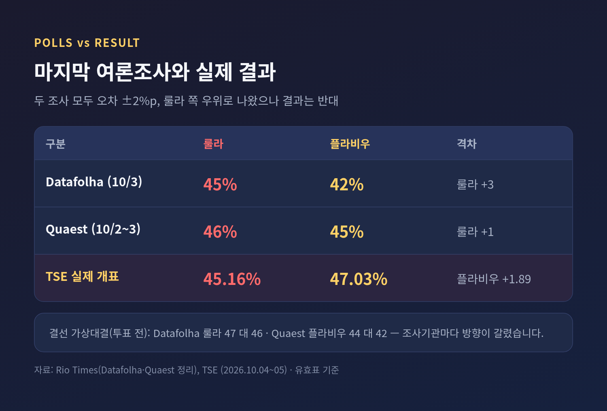
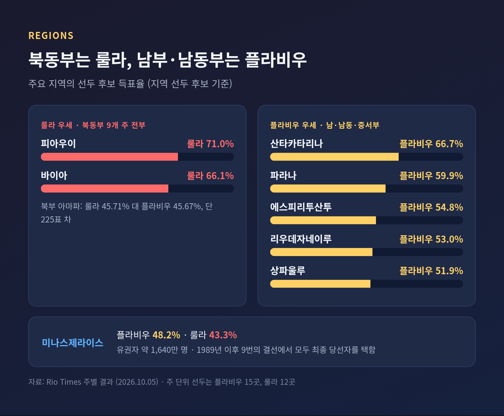
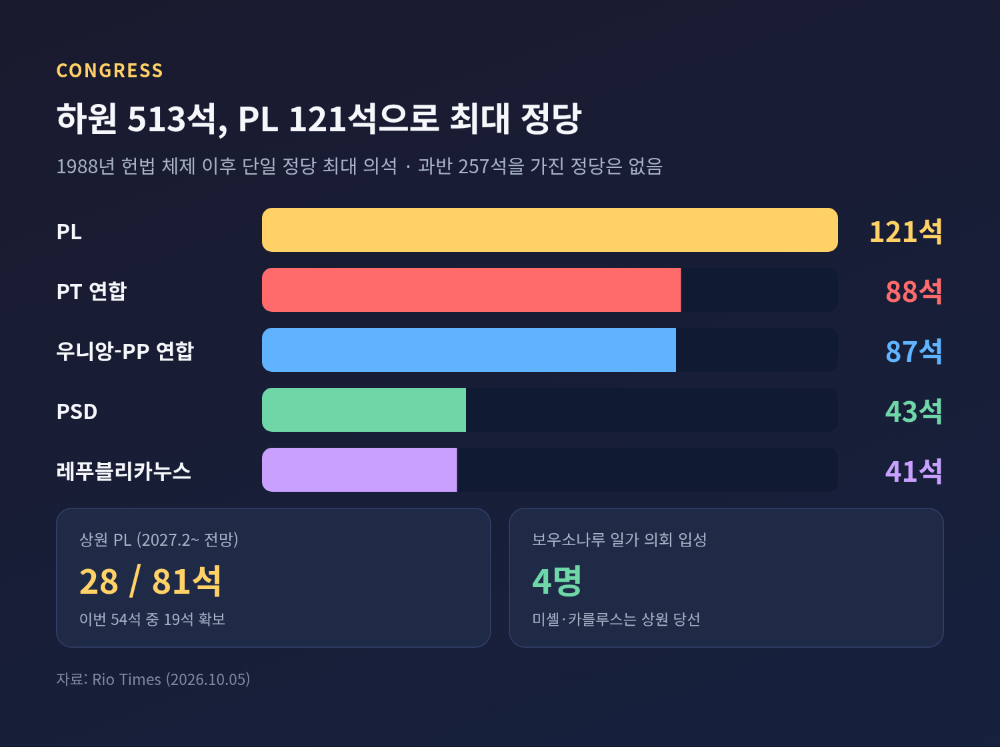
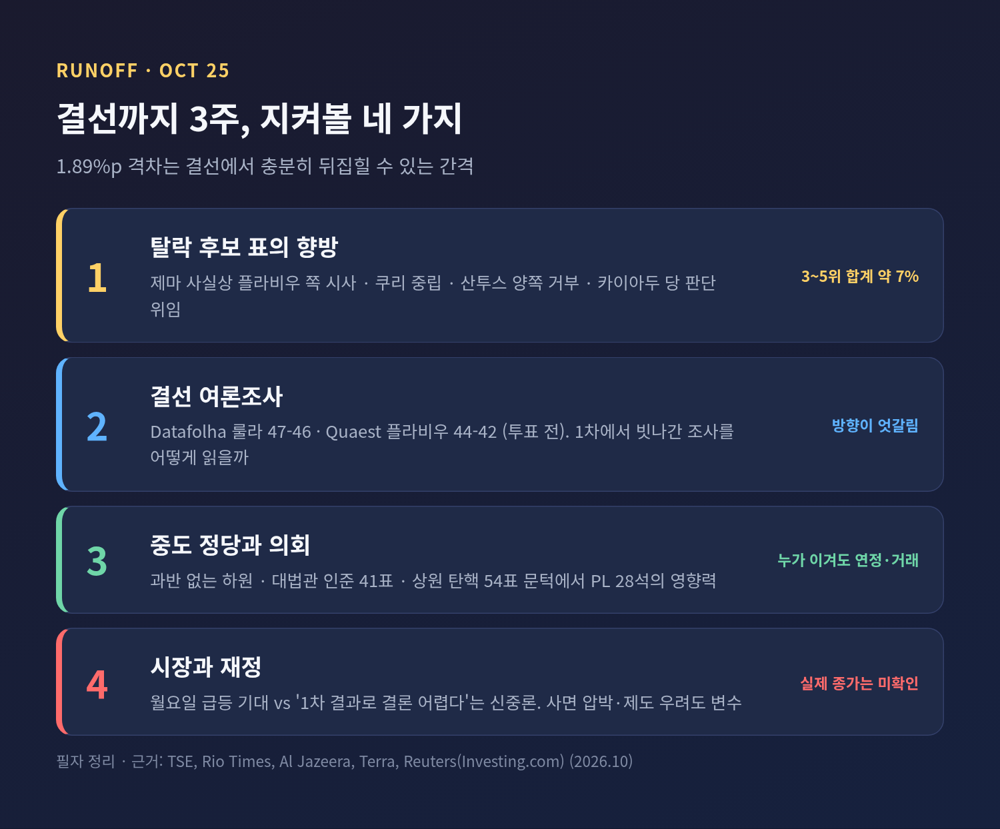

이번 글에서는 10월 4일 치러진 브라질 대선 1차 투표 결과를 정리해 보겠습니다. 여론조사와 달리 1위가 뒤바뀐 이유와 의회 지형, 결선의 변수까지 차례로 살핍니다.
3줄 요약
2026년 10월 4일(현지시간) 브라질에서 대통령·상하원·주지사를 뽑는 총선이 열렸습니다. 대통령은 유효표의 50%를 넘겨야 1차에서 당선됩니다. 이번에는 아무도 넘지 못했습니다.
브라질 선거법원(TSE)의 10월 5일 새벽 집계(개표율 99.99%)는 이렇습니다. 플라비우 보우소나루 상원의원이 5,610만여 표(47.03%), 룰라 대통령이 5,387만여 표(45.16%)였습니다. 무효표는 약 367만 표, 백지표는 약 230만 표입니다.
3위는 작가 아우구스투 쿠리로 2.89%였습니다. 헤난 산투스 2.24%, 호나우두 카이아두 2.18%가 뒤를 이었습니다. 매체에 따라 소수점 둘째 자리가 조금씩 다른 것은 보도 시점의 개표율이 달라서입니다.
개표 과정에도 장면이 있었습니다. 초반에는 상대적으로 부유한 남부·남동부 표가 먼저 들어와 플라비우 후보의 격차가 7%p대까지 벌어졌습니다. 룰라 후보의 지지 기반인 북동부 표가 늦게 열리면서 격차는 1.89%p로 좁혀졌습니다.

첫째, 1위가 뒤바뀌었기 때문입니다. 마지막 조사에서 Datafolha는 룰라 45%·플라비우 42%, Quaest는 46%·45%로 모두 룰라 쪽이 앞섰습니다. 두 조사 모두 오차범위 안이었습니다. 그래도 방향이 반대로 나왔다는 점은 가볍지 않습니다.
둘째, 이번 선거가 단순한 정권 심판을 넘어 보우소나루 일가의 복귀 여부를 묻기 때문입니다. 플라비우 후보의 부친인 자이르 보우소나루 전 대통령은 2022년 대선 패배 뒤 쿠데타를 모의한 혐의로 27년형을 살고 있습니다. 아들이 그 이름을 이어받아 선두로 나선 것입니다.
셋째, 브라질이 중남미 최대 경제국이라는 점입니다. 브라질산 수출품에는 최대 37.5%의 미국 관세가 걸려 있다고 Rio Times는 전했습니다. 누가 대통령이 되느냐는 미국과의 관계, BRICS 내 위상, 재정 운용 방향에 걸쳐 영향을 줍니다.

룰라 대통령은 80세입니다. 2003~2010년 집권했고 2023년 복귀했습니다. 이번에 4번째 임기에 도전하며 주권 수호, BRICS 연대, 2030년 산림 순손실 제로를 앞세웠습니다.
플라비우 후보는 45세, 리우데자네이루 출신 상원의원입니다. 2025년 12월 부친을 면회한 뒤 출마를 선언했습니다. 약 3조 헤알 규모의 부채 감축 기금과 미국과의 긴밀한 관계를 공약으로 내걸었다고 Rio Times는 정리했습니다.
선거는 범죄, 부패, 트럼프 요인으로 요약된다는 평이 많았습니다. 두 후보 모두 거부율이 48~56%에 이른다는 조사도 있었습니다. 지지만큼 반대가 강한 선거였다는 뜻입니다.
캠페인의 균열도 있었습니다. 미셸 보우소나루 전 영부인이 6월 말 당 여성 조직 직책에서 물러났고, 이것이 여성층 지지 격차로 이어졌을 수 있다는 보도가 있습니다. 다만 투표에 얼마나 영향을 줬는지는 확인되지 않았습니다.
표심은 지리적으로 갈렸습니다. 북동부 9개 주는 모두 룰라 후보가 가져갔습니다. 피아우이에서 71.0%, 바이아에서 66.1%를 얻었습니다. 반면 남부 3개 주와 중서부 4개 주에서는 플라비우 후보가 앞섰고, 산타카타리나는 66.7%에 달했습니다.
승부처는 남동부였습니다. 플라비우 후보는 상파울루 51.9%, 리우데자네이루 53.0%를 얻었습니다. 유권자 약 1,640만 명의 미나스제라이스에서도 48.2%로 룰라 후보(43.3%)를 앞섰습니다. Rio Times에 따르면 미나스는 1989년 이후 아홉 번의 대선 결선에서 모두 최종 당선자를 택했습니다. 주 단위로는 플라비우 15곳, 룰라 12곳입니다. 북부 아마파에서는 룰라 후보가 단 225표 차로 이겼습니다.

의회 결과는 더 눈에 띕니다. 하원 513석 가운데 PL이 121석으로 1988년 헌법 체제 이후 최대 단일 정당이 됐습니다. PT 연합은 88석, 우니앙-PP 연합은 87석입니다. 상원에서는 PL이 이번에 걸린 54석 중 19석을 얻어 2027년 2월부터 81석 중 28석을 가질 전망입니다.
그렇다고 우파가 의회를 장악한 것은 아닙니다. 하원 과반 257석을 가진 정당이 없습니다. 어느 정부든 중도 정당과 거래해야 합니다. 미셸 보우소나루는 연방구 상원의원에, 카를루스 보우소나루는 산타카타리나 상원의원에 당선돼 일가 4명이 의회에 들어갑니다.

룰라 대통령은 1차 승리를 놓친 데 놀랐다면서도 "더 강해져 돌아오겠다"고 했습니다. 플라비우 후보는 "노동자당 시대의 종말이 선언됐다"며 선거에 개입하지 않을 대법관을 임명하겠다고 약속했습니다. 한쪽은 아직 끝나지 않았다고 말하고, 다른 쪽은 이미 끝났다고 말하는 셈입니다.
원인을 두고는 해석이 갈립니다. 알자지라는 탈락 후보 지지자들이 룰라 후보를 꺾는 쪽으로 전략 투표를 했을 가능성을 짚었습니다. 반면 우파 전반이 처음으로 앞서 나간 결과라는 분석도 있습니다. 어느 쪽이 맞는지 아직 단정할 수 없습니다.
시장은 즉각 반응했습니다. 금요일 종가 기준 보베스파 지수는 192,115로 2.63% 올랐고, 헤알은 달러당 5.2133이었습니다. 미국 상장 브라질 ETF(EWZ)는 밤사이 약 10% 급등했다고 전해졌습니다. 로이터가 인용한 애널리스트들은 환율과 주식 모두 상승을 기대했습니다. 기준금리 Selic은 13.75%입니다.
신중론도 있습니다. 한 전략가는 1차 결과만으로 결론을 내기 어렵다고 했습니다. 부친의 사면 압박과 제도 불안을 우려하는 목소리도 있고, 의회가 재정 개혁보다 대법원 견제에 더 관심을 둘 것이라는 시각도 있습니다. 이 글을 쓰는 시점에는 월요일 시장의 실제 종가를 확인하지 못했습니다.
결선까지는 3주가 남았습니다. 살필 대목은 세 가지입니다.
첫째, 탈락 후보 표의 향방입니다. 제마(Novo) 후보는 "PT는 후진성"이라며 사실상 플라비우 후보 쪽을 시사했습니다. 쿠리 후보는 중립을 밝혔고, 산투스 후보는 양쪽 모두 문제라며 지지를 거부했습니다. 카이아두 후보는 당 지도부 판단에 맡겼습니다. 이들의 표는 합쳐 약 7%입니다.
둘째, 결선 여론조사입니다. 가상대결은 Datafolha가 룰라 47% 대 46%, Quaest는 플라비우 44% 대 42%로 갈렸습니다. 1차에서 한 번 빗나간 조사를 어떻게 읽을지가 숙제입니다.
셋째, 중도 정당과 의회입니다. 누가 이기든 과반 없는 의회에서 합의를 만들어야 합니다. 대법관 인준 41표와 탄핵 요건 같은 문턱을 PL이 얼마나 쥐게 되는지가 향후 4년의 힘의 균형을 정합니다.

정리하면 이렇습니다.
이번 1차 투표가 남긴 것은 승패가 아니라 불확실성입니다. 1.89%p 차이는 결선에서 충분히 뒤집힐 수 있는 간격입니다. 룰라 후보가 북동부 표를 얼마나 끌어내느냐, 플라비우 후보가 중도 표를 얼마나 흡수하느냐가 갈림길입니다.
여론조사가 한 번 틀렸다는 사실은 3주 뒤에도 겸손하게 기억할 만합니다.
참고한 보도: 브라질 선거법원(TSE, 10/5), 브라질 상원 뉴스(10/4), 알자지라(9/25, 10/5), Rio Times(10/4~5), Courthouse News(10/5), Latin Times(10/5), InvestNews(10/5), Terra(10/5), 로이터·Investing.com(10/5), ColombiaOne(10/4)